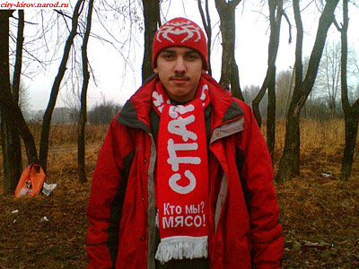

23 октября 2006
Аналитический уголок Кубка Колотиловки (старуха Шапокляк) представляет рубрику - "Лучший игрок тура". В данной колодке каждую неделю мы будем публиковать интервью с лучшим игроком минувшего тура ворошиловки.
В пятый игровой день лучшим футболистом Кубка Колотиловки (старуха Шапокляк) признан 30-летний финский хавбек "FC Spartak Seattle" Ари Лемпинен, который забил один из мячей в ворота "FС Zivju Fileja" и помог своему клубу добиться разгромной победы со счетом 5:0. На групповом этапе турнира скандинав провел три гола, а его команда финишировала первой в квинтете Щ. Кроме того, сверхрезультативный полузащитник ебанул уже девять мячей в своей лиге, где пока является лучшим снайпером. "Спартак" купил Лемпинена в начале июня за 135 тысяч латов, и с тех пор финн не раз доказывал свою профпригодность. Накануне 1/4 финала Кубка Колотиловки (старуха Шапокляк) с ведущим полузащитником сиэттловцев побеседовал наш корреспондент Эркюль Ожешко.
Эркюль Ожешко: Ари, ваша команда заняла первое место в группе Щ, а вы стали одним из лучших бомбардиров группового этапа. Скажите, вы ожидали подобного поворота событий до старта турнира, или для вас это полная неожиданность?
Ари Лемпинен: Ничего другого я не ожидал. Я и команда в полном порядосе. Вообще, по этой теме пиздеть можно очень много и долго. Но не хочется повторять судьбу горемык, которые пиздели в интервью, а затем получали в кость. Тем более мне уже тридцатник, а на физиотерапевтах и врачах в нашем клубе экономят. Так что не будем провоцировать любителей костики.
Э.О.: Вы занимаете первое место в споре лучших голеадоров своей лиги, забив 9 мячей. Чем объяснить такую высокую для полузащитника результативность?
А.Л.: Ваша информация устарела. Я ебашу голы со скоростью радио-комментатора сверх-результативного матча NCAA. На сегодняшний день их уже 12 после хет-трика в поединке на выходных. Секрета в моей Zulteтивности нет. Большую часть голов я забил со "стандартов". Это то немногое, что я умею на поле. И одновременоо, это то, против чего ни у одного соперника не находятся контраргументы. Да и действительно, хули тут делать, если я подхожу и закидываю мяч прямо в "паутину", как рукой. Забудьте о выносливости, друзья, качайте set pieces.
Э.О.: В 1/4 финала Кубка Колотиловки (старуха Шапокляк) вам предстоит встреча с соперником, которому вы подарили нынешнее название "MO4A HA nEPEnPABE". Довольны ли вы таким итогом жеребьевки, или хотели встретиться с другим оппонентом?
А.Л.: Очень доволен. Я не думаю, что в стане соперника присутствуют реваншисткие настроения. Ведь, как известно, он давно хотел сменить название. Так что, полагаю, обошлось без обид. Помимо всего прочего, мне импонирует атакующий стиль "мочевиков". Наше противосстояние обещает быть увлекательным для созирцателей Шапокляк. Пусть победит тот, кто больше забьет, а не тот, кто меньше пропустит.
Э.О.: Дайте прогноз на три остальных матча 1/4 финала : "FC Marshal Riga" - "FC Da Boyz", "KoKaLLIKuHbI KaHuKy/IbI" - "FС Zivju Fileja" и "Bender Selection" - "FC MEKAY".
А.Л.: Пары на мой взгляд предсказуемы. Уж я то знаю, о чем говорю. К примеру на выходных я ставил на московский "Спартак" и победу Cardinals во втором матче мировой серии. Надеюсь огорчить теперь "шарашкину контору". В первой паре очень хотелось бы увидеть победу "маршаков", так как либо нам с ними будет легко в полуфинале, либо мы вновь будем зачитываться предматчевыми стихами. Правда, боюсь, что победит "Da Boys", и мир наполнится кукурузной бравадой. В паре "KoKaLLIKuHbI KaHuKy/IbI" - "FС Zivju Fileja" тоже вроде все ясно. Рыба в канализации не выживет. Тем более, что "экскрименты" выставят на матч свои лучшие образцы. В третьем матче победит "Bender". Просто потому, что футбольный Бог никогда не позволит добиться успеха команде, играющей по схеме 5-4-1, имеющей в своем составе блестящих защитников и забивающей хуй на атакующие шахматы.
Э.О.: Господин Лемпинен, как считаете, через сколько сезонов ваша команда начнет бороться за выход в IV лигу?
А.Л.: Боремся мы уже сейчас. Отстование от лидера состовляет всего одно очко. Более того, в следующем туре мы примем этого псевдо-лидера на своем поле. Но все дело в том, что пока мы к сожалению не можем рассчитывать на успешное выступление в IV лиге. Если судьба распорядится так, что мы уже в нынешнем сезоне окажемся дивизионом выше, то перечить ей в виде проебанных спецом квалифаем мы не будем. В то же время, надеюсь, что через два сезона мы будем смотреть на остальных участиков ворошиловки с высоты четвертой лиги.
Э.О.: Последний вопрос - как думаете, какая команда имеет наибольшие шансы на завоевание Кубка Колотиловки (старуха Шапокляк)?
А.Л.: Главный фаворит - "Bender". Но и с ним можно бороться, что доказал мой сумосбродный состав, за выбор которого отвечала процедура Random, написанная на турбопаскале хуевым программером.
